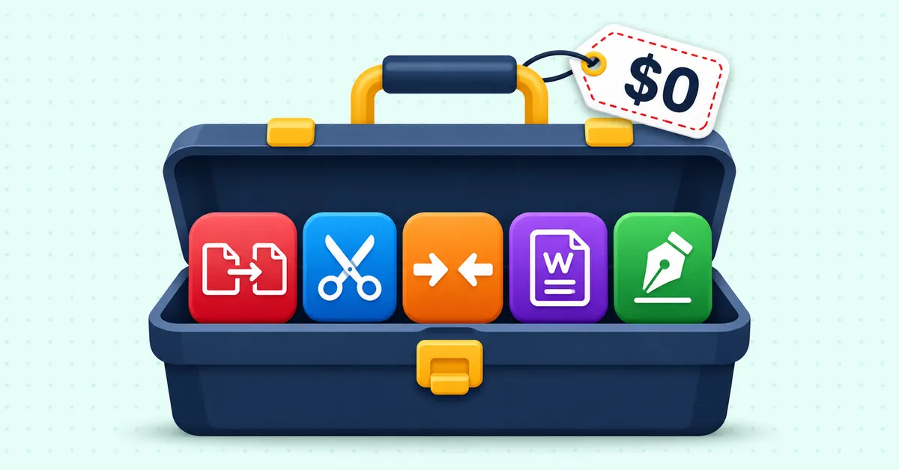
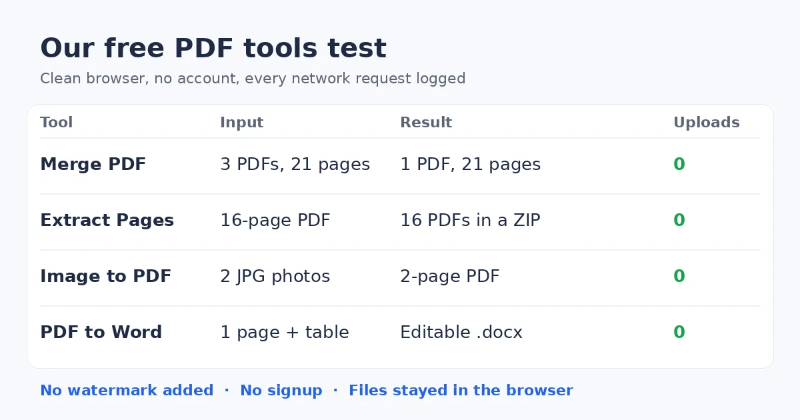

Best Free PDF Tools 2026, Picked by Task and Tested
The best free PDF tools in 2026 are the ones that finish a task with no signup, no watermark and no surprise cap at download. Browser-based tools that keep files on your device are the safer default. A paid suite only earns its price for heavy OCR, legal e-signatures or team work.
Start with the free Merge PDF tool or browse all PDFdukan tools. They run in your browser.

What are the best free PDF tools in 2026?
The best free PDF tools in 2026 fall into three groups: online toolkits, desktop apps and self-hosted software. Each group trades convenience against privacy and limits in a different way.
Online toolkits such as Smallpdf, iLovePDF, Sejda and PDFescape work in any browser. Their free tiers carry caps, and those caps change often. Desktop options such as PDF24 and PDFgear run on your own computer. Stirling PDF is open source and runs on your own server.
The table below lists free-tier limits exactly as Konomic reported them in its 2026 editor comparison. Konomic sells a competing editor, so check each vendor's pricing page before you rely on a number.
| Tool | Free text editing | Free OCR | Free limit | File size | Paid from |
|---|---|---|---|---|---|
| Smallpdf | No | No | 2 tasks a day | 15 MB | $9/mo |
| iLovePDF | No | No | Unlimited | 25 MB | $6/mo |
| PDFescape | Limited | No | Unlimited, 100 pages | 10 MB | $2.99/mo |
| Sejda | Limited | No | 3 tasks an hour | 50 MB | $7.50/mo |
| Stirling PDF | Yes | Yes | Unlimited | Unlimited | Free, self-hosted |
| PDFgear | Yes | Yes | Unlimited | Varies | Free |
Two rows deserve a note. Stirling PDF is free, but Konomic says setup needs Docker and SSL, and a server can cost $5–20 a month. PDF24 is missing from that table, yet PDFonFly's test found no signup wall on the PDF24 tools it tried.
What should "free" actually mean for a PDF tool?
A truly free PDF tool lets you finish and download the job without paying, signing up or accepting a watermark. Many tools meet one of those tests and fail another, so check all of them.
Use this checklist before you trust a tool with real paperwork:
- The download is free, not just the preview.
- The output has no watermark.
- One file never requires an account.
- Page, file size and daily limits are stated up front.
- The privacy model is clear, ideally with processing inside the browser.
- The tool works on a phone, where many PDFs start as scans.
The phone point matters more than it sounds. A receipt, a form or an ID card is often photographed first and turned into a PDF later. A tool that breaks on a small screen fails at the very start of that job.
How did we test our own free PDF tools?
We ran four PDFdukan tools on real files in a clean browser, with no account, and logged every network request. The goal was to check three claims: no upload, no watermark and no signup.
The files were a 16-page text report, a 4-page photo report and a 1-page document with a table. The browser recorded each request made after the file was added.

| Tool | Input | Result | File uploads |
|---|---|---|---|
| Merge PDF | 3 PDFs, 21 pages | One 21-page PDF, all 4,880 words kept | 0 |
| Extract PDF Pages | 16-page PDF | 16 single-page PDFs in a ZIP | 0 |
| Image to PDF | 2 JPG photos | 2-page PDF | 0 |
| PDF to Word | 1-page PDF with a table | Editable .docx | 0 |
The only network calls were downloads of the PDF.js code library, which carries none of your file. No output contained added watermark text. The merged file's metadata names PDFdukan as the creator, which is normal and invisible on the page.
Earlier tests of single tools went deeper. Our Compress PDF tool cut a 6-page scan from 13.79 MB to 1.79 MB with text still selectable. Our OCR tool read clean printed scans with no character errors.
Which free PDF tool fits each task?
The right free PDF tool depends on the job, because quality differs far more by task than by brand. A tool that merges perfectly can still mangle a table when it converts to Word.
Merge PDF files
A good merge tool shows page previews and lets you drag files into order before combining. Look for a way to drop stray pages, so the final file needs no second pass. Our guide to merging PDFs without losing quality explains how to keep page quality when you combine files.
Split or extract pages
A useful splitter can pull a page range, take single pages or separate every page into its own file. In our test, Extract PDF Pages turned a 16-page PDF into 16 files inside one ZIP.
Compress a large PDF
Compression quality matters more than the size number on the screen. Aggressive settings can make small text unreadable, so open the result before you send it. Our PDF compression test shows how scans, photos and text files each respond.
Convert PDF to Word and back
Conversion is where free tools differ most, especially with tables, columns and fonts. PDFonFly's test found Adobe's online converter strongest at keeping table formatting. Our PDF to Word formatting test lists what survived in our own converter.
Read scans with OCR
A scanned PDF holds pictures of text, so it needs OCR before you can edit or search it. Konomic's table shows that many online free tiers lock OCR behind a paid plan. PDFdukan's OCR tool is free and runs in the browser.
Fill and sign forms
For forms, precise placement and a clean export matter most. Test one page before you sign a whole packet, because a misplaced signature means starting again.
Edit text and redact
Redaction must remove the hidden text, not just cover it with a black box. A drawn rectangle can leave the original words selectable underneath. Konomic's table shows no free text editing in the Smallpdf and iLovePDF free tiers.
Do free PDF tools upload your files?
Most online PDF tools upload your file to their servers, while browser-based tools process it on your own device. That difference matters for contracts, bank statements and ID cards.
Upload-based services usually delete files after a set time. PDFonFly says reputable tools delete files within a short window, usually an hour or less. Konomic lists 2-hour file retention for iLovePDF and 1-hour deletion for its own servers.
Deletion policies are promises you cannot check yourself. Local processing removes the question, because the file never leaves the browser. That is why our test counted uploads rather than reading a policy page.
For AI features, ask one more question. Denser advises checking whether a tool trains on uploaded documents and how long it keeps them.
What hidden limits come with free PDF tools?
The most common hidden limit is a paywall that appears only when you click download. Watermarks, daily caps and small file size limits follow close behind.
Watch for these traps on any free PDF site:
- An export paywall after the work is done.
- A watermark that makes the file unfit for official use.
- Caps such as two files a day or a 5 MB limit.
- Misleading download buttons on low-quality sites.
File size limits hit scans hardest. Our own 6-page test scan weighed 13.79 MB, already over the 10 MB free limit Konomic lists for PDFescape. PDFdukan's Compress PDF tool accepts files up to 200 MB, and PDF to Word accepts up to 100 MB.
Do you need a PDF reader or a PDF editor?
Most people need a free PDF reader plus a few task tools, not a full PDF editor. A reader opens, prints and annotates files, while an editor changes the text itself.
Denser names Adobe Acrobat Reader its best free reader overall and SumatraPDF a lightweight reader for Windows. Neither replaces a merge, compress or convert tool. Pairing a reader with browser-based tools covers most daily office work without a subscription.
The common assumption is that serious PDF work needs Acrobat Pro, which Denser lists from $19.99 a month. For merging, splitting, compressing and converting, a free toolkit usually does the same job.
When is a paid PDF tool worth the money?
A paid PDF tool is worth it when your work needs scale, legal proof or team control. For occasional tasks, free tools are usually enough.
The cases where paying makes sense are high-volume OCR across many scans, and legally binding signatures with audit trails and identity checks. Deep reflowing of existing body text also needs a full editor. Teams may want shared templates, permissions and integrations.
A small business sending a few invoices a week fits none of those cases. A firm signing client contracts every day fits at least one.
Frequently Asked Questions
What is the best free PDF tool for everyday tasks?
The best free PDF tool for everyday tasks is one that merges, splits, compresses and converts with no signup or watermark. Test it with one small file first. Check the download step, because that is where hidden paywalls appear.
Are free online PDF tools safe?
Free online PDF tools are reasonably safe for ordinary files if they use HTTPS and delete uploads quickly. For sensitive records, choose a tool that processes files in your browser. Then no copy sits on a third-party server.
Do free PDF tools add watermarks?
Some free PDF tools add watermarks to push paid plans, but many do not. Run one test page and open the result before you process a full document. Our own test outputs had no watermark.
Do I need an account to use free PDF tools?
Most free PDF tools need no account for a single task. Some ask for signup after a few tasks a day or before download. The PDFdukan tools in our test worked without an account.
Can I edit a scanned PDF for free?
A scanned PDF can be edited for free once OCR turns its page images into text. Run OCR first, then edit or convert the result. Proofread names and numbers, because OCR can misread look-alike characters.
Can I use free PDF tools on my phone?
Free PDF tools work on a phone if the site is built for small screens. Browser-based tools need no app install. Try one task on your phone before you depend on it.
Is Adobe Acrobat Reader free?
Adobe Acrobat Reader is free, and Denser names it the best free PDF reader overall. The paid Acrobat Pro starts at $19.99 a month, according to Denser. Free task tools can cover merging, compressing and converting.
Which free PDF tools work without the cloud?
Desktop and self-hosted PDF tools work without sending files to a cloud service. PDFonFly notes that PDF24 offers a desktop app. Konomic names Stirling PDF the best self-hosted option, though it needs technical setup. Browser-based tools also keep files local while they process them.
How many free PDF tools do I really need?
Most people need one PDF reader and one toolkit that covers merge, split, compress and convert. Adding many separate sites means more uploads and more limits to track. Keep one trusted toolkit bookmarked instead.